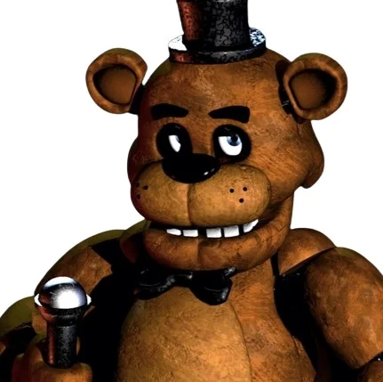
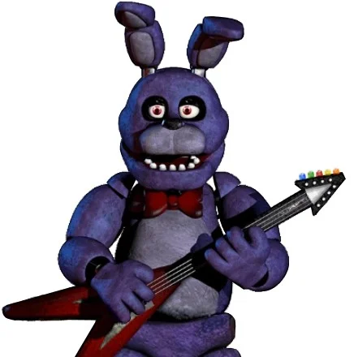
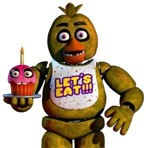
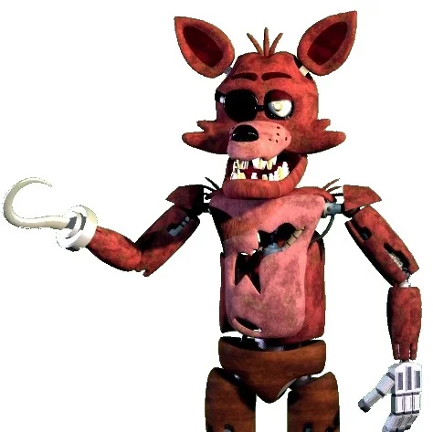

Após a fase futurista de 1987, a Fazbear Entertainment decidiu retornar às suas raízes. Na década de 1990, inauguramos uma versão reestruturada e mais intimista da Freddy Fazbear's Pizza. O objetivo dessa era foi resgatar o calor humano, focando em um salão acolhedor, pizzas artesanais de alta qualidade e o retorno triunfal dos nossos quatro personagens originais.
Freddy Fazbear's Pizza (Anos 90)
A essência do aconchego e o charme inconfundível do entretenimento tradicional.
O Retorno da Banda Clássica
Com o descarte dos modelos de plástico, os trajes originais passaram por um rigoroso processo de restauração estética, ganhando um acabamento em pelúcia aveludada e expressões inconfundíveis:

Freddy Fazbear
Restauração completa do nosso líder. Com seu tom marrom aveludado e risada marcante, continuou sendo a grande atração da noite.

Bonnie
Retornando com seu design clássico em azul-púrpura, Bonnie liderava os solos no palco com sua lendária postura de gênio da guitarra.

Chica
Ostentando seu famoso babador "Let's Eat!!!", Chica espalhava a paixão pela culinária e animava os jantares das famílias no salão.

Foxy
Abrigado em sua charmosa Pirate Cove com cortinas estreladas, Foxy permaneceu como a atração mais misteriosa e querida dos jovens aventureiros.
Sistemas de Eficiência Operacional
A engenharia dos anos 90 priorizou a sustentabilidade e a durabilidade mecânica. Os robôs foram equipados com motores pneu-hidráulicos otimizados para operar com **Gerenciamento Inteligente de Energia**.
"Sistemas simplificados e eficientes que garantiram anos de apresentações consistentes e memoráveis sem a necessidade de grandes infraestruturas."
Essa tecnologia permitia que o show funcionasse perfeitamente com baixo consumo elétrico, mantendo o movimento fluído dos personagens e a sincronização impecável das faixas de áudio analógicas.
O Encerramento de um Ciclo Glorioso
A unidade dos anos 90 operou com orgulho até o final de seu ciclo comercial, marcando a despedida do formato tradicional de pizzarias de bairro.
Com o crescimento da marca e o surgimento de novas demandas de mercado, a Fazbear Entertainment encerrou as atividades deste local para iniciar o planejamento do que viria a ser o ápice do entretenimento mundial: o Mega Pizzaplex.
Os anos 90 provaram que o carisma de Freddy e seus amigos é atemporal e ultrapassa gerações!